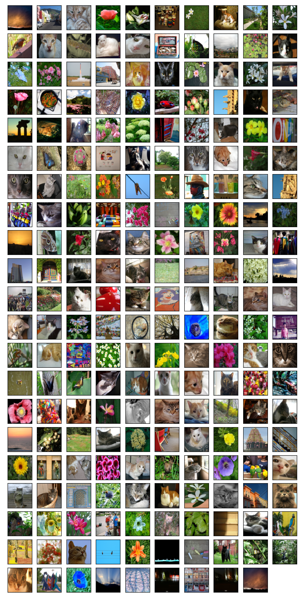
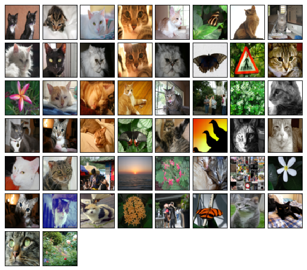
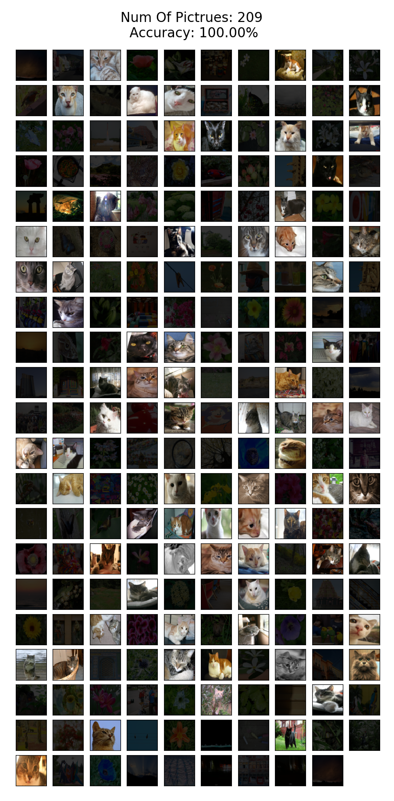
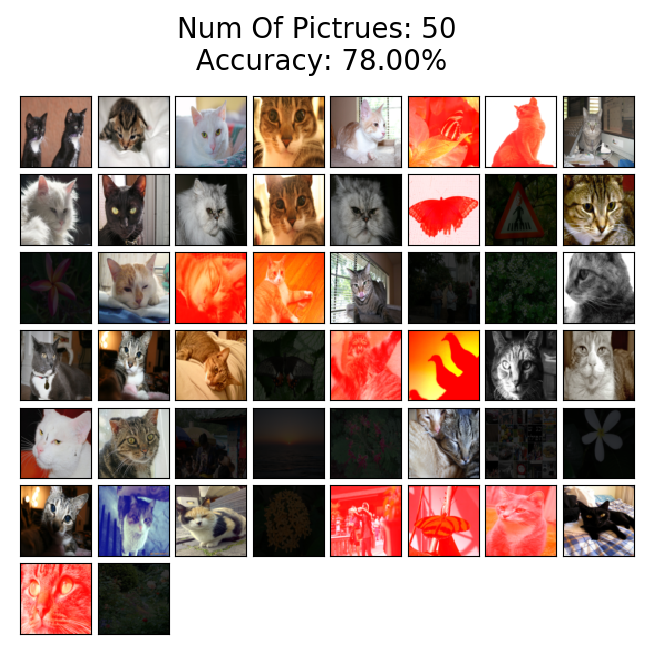
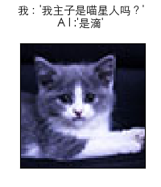

一. 前言
阅读本文的基础：
-
我会认为你对BP神经网络有充分的了解，熟读过我上一篇文章，本文会大量引用上一篇文章的知识以及代码。
-
上一篇笔记的传送门：《AI从入门到放弃：BP神经网络算法推导及代码实现笔记》
二. 用MLP做图像分类识别？
-
在没有CNN以及更先进的神经网络的时代，朴素的想法是用多层感知机（MLP）做图片分类的识别，没毛病
-
作为上篇笔记学习的延续，以及下一篇CNN的药引，使用MLP来做图片分类识别，实在是个不错的过度例子。通过这个例子，从思路上引出一系列的问题，我不卖关子，自问自答吧，即：
-
MLP能做图片分类识别吗？--> 答案是是可以的，上一篇我们是拟合非线性分类函数，这里是拟合图像特征，数学本质没区别。
-
MLP做这个事情效果如何？--> 个人认知内，只能说一般一般。
-
MLP在这一领域效果一般，是有什么缺陷吗？ --> 缺陷是有的，下文会详细说。
-
有更好的解决方案吗？ --> 那也是必须有的，地球人火星人喵星人都知道有CNN等等更先进的东东；但是在没有这些东西存在的时代，你发明出来了，那才真是666。
-
三. 先上车
1. 数据源
-
数据源当然是图片，但是是经过数据化处理的图片，使用的是h5文件。h5文件简单说就是把数据按索引固化起来，挺简单的不多说，度度一下 --> h5py入门讲解
-
我们有3个h5文件，存着不重复的图片数据，分别是：
-
train_catvnoncat.h5 (用来训练模型用的，一共有209张，其中有猫也有不是猫的图片，尺寸64*64像素)
-
test_catvnoncat.h5 （用来测试模型准确度的，一共有50张图片，，其中有猫也有不是猫的图片，尺寸64*64像素）
-
my_cat_misu.h5 （用来玩的，我家猫主子的1张照骗，尺寸64*64像素）
-
2. 数据结构
- 拿train_catvnoncat.h5举例，这个文件有2个索引：
-
train_set_x：这是一个数组，因为是209张图片，所以数组长度是209。数组中的元素是一个 64*64*3 的矩阵。64*64是图片像素尺寸，3是什么鬼？别忘了这是彩色图片，3就是代表RGB这3个颜色通道的值。
-
train_set_y：图片标签数组，长度也是209，是209张图片的标签（label），对应数组下标的值是1时，代表这张图片是喵星人，0则代表不是。
-
同理，test_catvnoncat.h5 中有 test_set_x 和 test_set_y；my_cat_misu.h5 中有 mycat_set_x 和 mycat_set_y
-
3. 告诉你怎么制作图片的h5文件，以后做cnn等模型训练时，非常有用
-
以我主子为例子：
-
原图：
-
自己处理成64*64的图片，当然你也可以写代码做图片处理，我懒，交给你实现了：

-
-
python代码，用到h5py库：
def save_imgs_to_h5file(h5_fname, x_label, y_label, img_paths_list, img_label_list):# 构造n张图片的随机矩阵data_imgs = np.random.rand(len(img_paths_list), 64, 64, 3).astype('int')label_imgs = np.random.rand(len(img_paths_list), 1).astype('int')# plt.imread可以把图片以多维数组形式读出来，然后我们存成 n*n*3 的矩阵for i in range(len(img_paths_list)):data_imgs[i] = np.array(plt.imread(img_paths_list[i]))label_imgs[i] = np.array(img_label_list[i])# 创建h5文件，按照指定的索引label存到文件中，完事了f = h5py.File(h5_fname, 'w')f.create_dataset(x_label, data=data_imgs)f.create_dataset(y_label, data=label_imgs)f.close()return data_imgs, label_imgs#用法# 图片label为1代表这是一张喵星人的图片，0代表不是save_imgs_to_h5file('datasets/my_cat_misu.h5', 'mycat_set_x', 'mycat_set_y', ['misu.jpg'],[1])
4. 看看我的数据源的样子
-
用来训练的图片集合，209张：

-
用来校验模型准确度的图片集合， 50张

-
用来玩的，主子照骗，1张：

四. 开车了
1. 如何设计模型：
-
输入层：
我们的图片是64*64的像素尺寸，那么算上RGB三个通道的数据，我们把三维矩阵拉成面条 64*64*3 = 12288。 也就是我们输入层的数据长度是12288。 -
隐藏层：
使用多层隐藏层，可以自行多尝试一下不同的结构。这里我使用3个隐藏层，隐藏层神经元个数分别是20，7，5 -
输出层：
我们的目标就是判断某张图片是否是猫而已，所以输出层1个神经元，输出概率大于0.5认为是猫，小于等于0.5认为不是。
【插播】：有人会想，第一层隐藏层的神经元和输入层数量一致是不是会好点？理论上是会好点，但是这涉及到MLP的一个缺陷，因为全连接情况下，这样做，第一层的权重w参数就有1228的平方个，约为1.5个亿。如果图片更大呢？参数会成指数级膨胀，后果尽情想象。
2. 如何训练模型
- 还用说，把209张图片的数据扔到神经网络，完成一次迭代，然后训练1万次，可自行尝试迭不同代次数观察效果。
3. 如何衡量模型的准确度
-
大神吴恩达（Andrew Ng）提到的方法之一，就是划分不同集合，一部分用来训练，一部分用来验证模型效果，这样可以达到衡量你所训练的模型的效果如何。所以我们训练使用209张图片，最终使用50张测试模型效果。
-
为了好玩，可以自己用不同图片通过模型去做分类识别。
五. 老规矩，甩代码
还是说明一下代码流程吧：
-
代码使用到的 NeuralNetwork 是我上一篇笔记的代码，实现了BP神经网络，import进来直接用即可。
-
代码做的事情就是：
- 从h5文件加载图片数据
- 把原始图片显示出来，同时也保存成图片文件
- 训练神经网络模型
- 验证模型准确度
- 把识别结果标注到原始图片上，同时也保存成图片文件
#coding:utf-8import h5pyimport matplotlib.font_manager as fmimport matplotlib.pyplot as pltimport numpy as npfrom NeuralNetwork import *font = fm.FontProperties(fname='/System/Library/Fonts/STHeiti Light.ttc')def load_Cat_dataset():train_dataset = h5py.File('datasets/train_catvnoncat.h5', "r")train_set_x_orig = np.array(train_dataset["train_set_x"][:])train_set_y_orig = np.array(train_dataset["train_set_y"][:])test_dataset = h5py.File('datasets/test_catvnoncat.h5', "r")test_set_x_orig = np.array(test_dataset["test_set_x"][:])test_set_y_orig = np.array(test_dataset["test_set_y"][:])mycat_dataset = h5py.File('datasets/my_cat_misu.h5', "r")mycat_set_x_orig = np.array(mycat_dataset["mycat_set_x"][:])mycat_set_y_orig = np.array(mycat_dataset["mycat_set_y"][:])classes = np.array(test_dataset["list_classes"][:])train_set_y_orig = train_set_y_orig.reshape((1, train_set_y_orig.shape[0]))test_set_y_orig = test_set_y_orig.reshape((1, test_set_y_orig.shape[0]))mycat_set_y_orig = mycat_set_y_orig.reshape((1, mycat_set_y_orig.shape[0]))return train_set_x_orig, train_set_y_orig, test_set_x_orig, test_set_y_orig, mycat_set_x_orig, mycat_set_y_orig,classesdef predict_by_modle(x, y, nn):m = x.shape[1]p = np.zeros((1,m))output, caches = nn.forward_propagation(x)for i in range(0, output.shape[1]):if output[0,i] > 0.5:p[0,i] = 1else:p[0,i] = 0# 预测出来的结果和期望的结果比对，看看准确率多少：# 比如100张预测图片里有50张猫的图片，只识别出40张，那么识别率就是80%print(u"识别率: " + str(np.sum((p == y)/float(m))))return np.array(p[0], dtype=np.int), (p==y)[0], np.sum((p == y)/float(m))*100def save_imgs_to_h5file(h5_fname, x_label, y_label, img_paths_list, img_label_list):data_imgs = np.random.rand(len(img_paths_list), 64, 64, 3).astype('int')label_imgs = np.random.rand(len(img_paths_list), 1).astype('int')for i in range(len(img_paths_list)):data_imgs[i] = np.array(plt.imread(img_paths_list[i]))label_imgs[i] = np.array(img_label_list[i])f = h5py.File(h5_fname, 'w')f.create_dataset(x_label, data=data_imgs)f.create_dataset(y_label, data=label_imgs)f.close()return data_imgs, label_imgsif __name__ == "__main__":# 图片label为1代表这是一张喵星人的图片，0代表不是#save_imgs_to_h5file('datasets/my_cat_misu.h5', 'mycat_set_x', 'mycat_set_y', ['misu.jpg'],[1])train_set_x_orig, train_set_y_orig, test_set_x_orig, test_set_y_orig, mycat_set_x_orig, mycat_set_y_orig, classes = load_Cat_dataset()train_x_flatten = train_set_x_orig.reshape(train_set_x_orig.shape[0], -1).Ttest_x_flatten = test_set_x_orig.reshape(test_set_x_orig.shape[0], -1).Tmycat_x_flatten = mycat_set_x_orig.reshape(mycat_set_x_orig.shape[0], -1).Ttrain_set_x = train_x_flatten / 255.test_set_x = test_x_flatten / 255.mycat_set_x = mycat_x_flatten / 255.print(u"训练图片数量: %d" % len(train_set_x_orig))print(u"测试图片数量: %d" % len(test_set_x_orig))plt.figure(figsize=(10, 20))plt.subplots_adjust(wspace=0,hspace=0.15)for i in range(len(train_set_x_orig)):plt.subplot(21,10, i+1)plt.imshow(train_set_x_orig[i],interpolation='none',cmap='Reds_r',vmin=0.6,vmax=.9)plt.xticks([])plt.yticks([])plt.savefig("cat_pics_train.png")plt.show()plt.figure(figsize=(8, 8))plt.subplots_adjust(wspace=0, hspace=0.1)for i in range(len(test_set_x_orig)):ax = plt.subplot(8, 8, i + 1)im = ax.imshow(test_set_x_orig[i], interpolation='none', cmap='Reds_r', vmin=0.6, vmax=.9)plt.xticks([])plt.yticks([])plt.savefig("cat_pics_test.png")plt.show()plt.figure(figsize=(2, 2))plt.subplots_adjust(wspace=0, hspace=0)for i in range(len(mycat_set_x_orig)):ax = plt.subplot(1, 1, i + 1)im = ax.imshow(mycat_set_x_orig[i], interpolation='none', cmap='Reds_r', vmin=0.6, vmax=.9)plt.xticks([])plt.yticks([])plt.savefig("cat_pics_my.png")plt.show()# 用训练图片集训练模型layers_dims = [12288, 20, 7, 5, 1]nn = NeuralNetwork(layers_dims, True)nn.set_xy(train_set_x, train_set_y_orig)nn.set_num_iterations(10000)nn.set_learning_rate(0.0075)nn.training_modle()# 结果展示说明：# 【识别正确】：# 1.原图是猫，识别为猫 --> 原图显示# 2.原图不是猫，识别为不是猫 --> 降低显示亮度# 【识别错误】：# 1.原图是猫，但是识别为不是猫 --> 标红显示# 2.原图不是猫， 但是识别成猫 --> 标红显示# 训练用的图片走一遍模型，观察其识别率plt.figure(figsize=(10, 20))plt.subplots_adjust(wspace=0, hspace=0.15)pred_train, true, accuracy = predict_by_modle(train_set_x, train_set_y_orig, nn)for i in range(len(train_set_x_orig)):ax = plt.subplot(21, 10, i + 1)x_data = train_set_x_orig[i]if pred_train[i] == 0 and train_set_y_orig[0][i] == 0:x_data = x_data/5if true[i] == False:x_data[:, :, 0] = x_data[:, :, 0] + (255 - x_data[:, :, 0])im = plt.imshow(x_data,interpolation='none',cmap='Reds_r',vmin=0.6,vmax=.9)plt.xticks([])plt.yticks([])plt.suptitle(u"Num Of Pictrues: %d\n Accuracy: %.2f%%" % (len(train_set_x_orig), accuracy), y=0.92, fontsize=20)plt.savefig("cat_pics_train_predict.png")plt.show()# 不属于训练图片集合的测试图片，走一遍模型，观察其识别率plt.figure(figsize=(8, 8))plt.subplots_adjust(wspace=0, hspace=0.1)pred_test, true, accuracy = predict_by_modle(test_set_x, test_set_y_orig, nn)for i in range(len(test_set_x_orig)):ax = plt.subplot(8, 8, i + 1)x_data = test_set_x_orig[i]if pred_test[i] == 0 and test_set_y_orig[0][i] == 0:x_data = x_data/5if true[i] == False:x_data[:, :, 0] = x_data[:, :, 0] + (255 - x_data[:, :, 0])im = ax.imshow(x_data, interpolation='none', cmap='Reds_r', vmin=0.6, vmax=.9)plt.xticks([])plt.yticks([])plt.suptitle(u"Num Of Pictrues: %d\n Accuracy: %.2f%%" % (len(test_set_x_orig), accuracy), fontsize=20)plt.savefig("cat_pics_test_predict.png")plt.show()# 用我家主子的照骗，走一遍模型，观察其识别率，因为只有一张图片，所以识别率要么 100% 要么 0%plt.figure(figsize=(2, 2.6))plt.subplots_adjust(wspace=0, hspace=0.1)pred_mycat, true, accuracy = predict_by_modle(mycat_set_x, mycat_set_y_orig, nn)for i in range(len(mycat_set_x_orig)):ax = plt.subplot(1, 1, i+1)x_data = mycat_set_x_orig[i]if pred_mycat[i] == 0 and mycat_set_y_orig[0][i] == 0:x_data = x_data/5if true[i] == False:x_data[:, :, 0] = x_data[:, :, 0] + (255 - x_data[:, :, 0])im = ax.imshow(x_data, interpolation='none', cmap='Reds_r', vmin=0.6, vmax=.9)plt.xticks([])plt.yticks([])if pred_mycat[i] == 1:plt.suptitle(u"我：'我主子是喵星人吗？'\nA I :'是滴'", fontproperties = font)else:plt.suptitle(u"我：'我主子是喵星人吗？'\nA I :'唔系~唔系~'", fontproperties = font)plt.savefig("cat_pics_my_predict.png")plt.show()
六.结论
1. 神经网络模型的输出结果，标注到了图片上并展示出来，规则是：
结果展示说明：
【识别正确】：
- 原图是猫，识别为猫 --> 原图显示
- 原图不是猫，识别为不是猫 --> 降低显示亮度
【识别错误】：
- 原图是猫，但是识别为不是猫 --> 标红显示
- 原图不是猫， 但是识别成猫 --> 标红显示
图片标题会显示Accuracy（准确度），准确度的计算公式是： 识别正确图片数/图片总数。
2. 模型训练完成后，把训练用的209张图片用训练好的模型识别一遍，观察结果：可以看到，迭代1w次的模型，识别训练图集，准确度是 100% 的：

3. 模型训练完成后，使用测试图集用训练好的模型识别一遍，观察结果：可以看到，迭代1w次的模型，识别训练图集，准确度只有 78%：

4. 看看模型能不能认出我主子是喵星人，看样子，它是认出来了：

七.对结果进一步分析，引出一系列问题
-
抛出一个问题：
为什么用测试图集验证模型，识别率只有78%？在我尝试过改变神经网络结构设计，参数调参后，仍然无法提高识别率，为什么呢？ -
不算彻底的解答：
-
也许是我水平有限，调参姿势不对？姿势帅并不是万能的，我们应该从更深层次的原理进行分析。
-
有人说，你训练数据少了，好像有那么些道理。其实是可以给模型输入更多图片的特征是个不错的办法，比如旋转一下，图片内容放大缩小，挪挪位置等。但是Andrew Ng也说过，过分追求训练数据收集是一条不归路。在同等训练数据集下，有更好的办法吗？由此引出下一个问题。
-
-
刨根问底：
想要知道为什么MLP识别度难以做到很高，撇开网络结构，调参，训练数据先不谈。我们应该从MLP身上找找茬。搞清楚我们目标，是提高对图片进行分类识别，那么在使用MLP实现这个目标时，它自身是否有缺陷，导致实现这个目标遇到了困难。那么解决了这些困难，就找到了解决问题的方法。 -
MLP在做图片分类识别的缺陷：
-
神经元是全连接的方式构成的神经网络，全连接情况下，假设图片是1k*1k像素大小，那么隐藏层个数和输入层尺寸一致时，不考虑RGB颜色通道，单通道下，权重w参数个数会是：
(103∗103)2=1012=1千亿（没数错0的话）
如果图片再大点，参数膨胀到不可想象，直接导致的负面效果是：- 参数过多，计算量庞大
- 全连接情况下，过深的网络容易导致梯度消失，模型难以训练
-
MLP全连接的情况下，无法做到图片的形变识别。怎么理解这个词呢，拿手写数字举个例子，比如写8，每个人书写习惯不一样，有的人写的很正，但有的人写歪了点，上半部分小，下半部分大，等等。这时候，MLP的缺点就显现出来了，同一张图片，旋转，或者稍微平移形变一下，它无法识别。你可以通过增加更多特征给模型，但这不是本质上的解决该问题的方法，而是对训练的优化手段。
八. 总结要解决的问题，离下一个坑就不远了
上面已经列举了要解决的几个问题，这里总结一下：
-
我们要解决参数膨胀带来的计算量庞大的问题
-
优化参数量之后，如何在同等训练数据集不变的情况下，如何提取更多特征
-
在输入有一定的旋转平移伸缩时，仍能正确识别
能解决以上问题的众所周知，就是CNN以及众多更先进的神经网络模型了。本文作为一篇引子文章，也是CNN的导火索。
代码在你手中，把第一层隐藏层设计成和输入层一样大，即 layers_dims = [12288, 12288, 20, 7, 5, 1]。还只是64*64的小图片而已，那龟速，我和我的小破笔记本都不能忍啊。这也是为什么大神们发明CNN的原因之一吧！